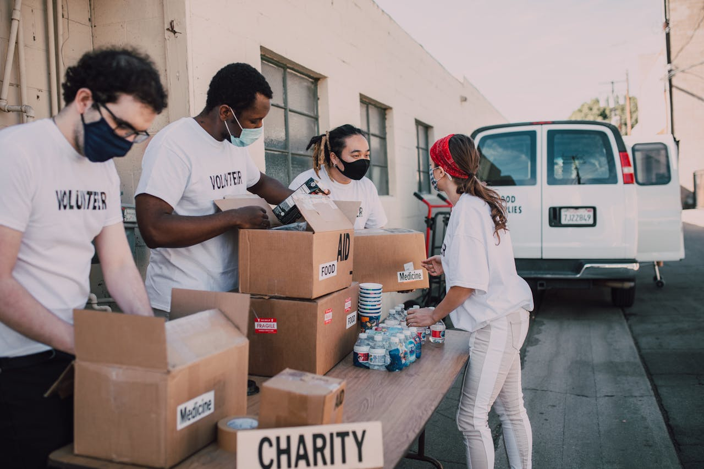

Be The Reason a Star believes!

Our star labs run on people who share time, skills and curiosity. No qualification needed - just 90 minutes and a willingness to learn alongside them.
Ready to be the reason a star believes?
Hit the button below to access the volunteer form
Why Volunteers Matters Here
At Makalla Bright Stars, volunteers are the gravity that keeps our constellation together. Every telescope night, every wobbly first solder and every nervous debate speech happens because an adult chose to show up and say "Let's try this together." Our Stars labs are not run by distant experts, they are powered by neighbours, Students, retirees and parents who bring their own curiosity into the room.
You also multiply what's possible. One mentor turn a group of five into a team. One extra pair of hands means ten more kids can test their code before sunset.We can fund the kits and open the doors, but it's volunteers who turn those rooms into places where a child discovers THEY ARE NOT JUST LOOKING AT THE STARS - THEY COULD REACH THEM.